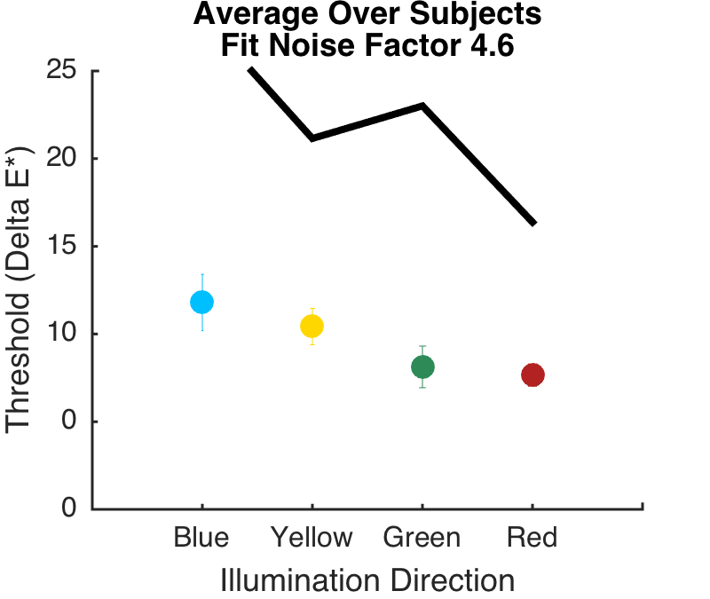

Contents
- Hello
- Load the data.
- Load the calcParams used for this set of data
- Figure parameters
- Special plotting colors
- Plot thresholds for one subject. Which one? Set s to any number from 1 to 10.
- Plots thresholds from all subjects averaged, matched condition only.
- Add theory to this plot
- Sample psychometric function plot
- Plots thresholds from all subjects averaged - all backgrounds
function varargout = IllumDiscrimPlots(varargin) % % Plots of the psychophysical data. % % This is code provided by Ana and then modified by me, % mostly for formatting and to add model predictions. % % The modeling was in progress at the time of the talk, and % to make the model code run you also need the model output. % All in all, this is unlikely to be of general interest. % % A conceptual problem is that by linking to the model data, % as we tune the model we no longer get the plots made at the % time of the talk. That doesn't seem pressing enough to fix % right now, I'm just noting it. % % 6/2/15 dhb Added formatting, started to clean up. % 7/31/15 dhb Added more comments about the fragile nature of life. varargout = UnitTest.runValidationRun(@ValidationFunction, nargout, varargin); end function ValidationFunction(runTimeParams)
Hello
UnitTest.validationRecord('SIMPLE_MESSAGE', sprintf('%s',mfilename));
Load the data.
The individual subject data is for the VSS poster data.
load('FitThresholdsAllSubjectsExp5.mat'); ALL_BACKGROUNDS = false; if (ALL_BACKGROUNDS) % This is the VSS 14 data, for all backgrounds. The neutral background % data here is for a subset of subjects plotted above. It's a little % unusual in that these particular subjects didn't show an obvious "blue % bias", but in fact does not differ by statistical test from other closely % matched conditions -- there is just a lot of subject variability. load('FitThresholdsAveragesExp5.mat'); else % The combined data is for the neutral condition across both VSS and depth control % data. Not sure if the depth control is for both depths or only one. load('FitThresholdsAveragesExp5Exp6Combined.mat'); end
Load the calcParams used for this set of data
calcIDStr = 'StaticPhoton'; dataBaseDir = getpref('BLIlluminationDiscriminationCalcs', 'DataBaseDir'); if (~exist(dataBaseDir,'dir')) fprintf('You will need to get the model data to run this function\n'); return; end dataFilePath = fullfile(dataBaseDir, 'SimpleChooserData', calcIDStr, ['psychofitSummary' calcIDStr]); compObserverSummaryNeutral = load(dataFilePath); dataFilePath = fullfile(dataBaseDir, 'SimpleChooserData', calcIDStr, ['blueIllumComparison' calcIDStr]); blueIlluminantPsychoNeutral = load(dataFilePath);
Figure parameters
curDir = pwd; masterFigParamsDir = getpref('bfScripts','masterFigParamsDir'); cd(masterFigParamsDir); figParams = MasterFigParams; cd(curDir); if (exist('../SecondaryFigParams','file')) cd .. figParams = SecondaryFigParams(figParams); cd(curDir); end figParams.figType = {'pdf'};
Special plotting colors
figParams.plotRed = [178,34,34]/255; figParams.plotGreen = [46 139 87]/255; figParams.plotBlue = [0 191 255]/255; figParams.plotYellow = [255 215 0]/255; yAxisLimit = 25; saveFigure = 0;
Plot thresholds for one subject. Which one? Set s to any number from 1 to 10.
Note the trick of putting a space as a superscript space at the start and a subcript space at the end of the x axis tick labels, which has the effect of creating some vertical space. Similarly for the leading space on the y axis labels.
s = 5; figParams.figName = 'IllumDiscrimOneSubjectNeutralSet'; figParams.xLimLow = 0; figParams.xLimHigh = 5; figParams.xTicks = [0 1 2 3 4 5]; figParams.xTickLabels = {'', '^{ }Blue_{ }', '^{ }Yellow_{ }', '^{ }Green_{ }', '^{ }Red_{ }'}; figParams.yLimLow = 0; figParams.yLimHigh = 25; figParams.yTicks = [0 5 10 15 20 25]; figParams.yTickLabels = {' 0 ' ' 0 ' ' 10 ' ' 15 ' ' 20 ' ' 25 '}; theFig = figure; clf; hold on set(gcf,'Position',[100 100 figParams.size figParams.sqSize]); set(gca,'FontName',figParams.fontName,'FontSize',figParams.axisFontSize,'LineWidth',figParams.axisLineWidth); errorbar(1,subject{s}.meanMatched.BlueMean, subject{s}.meanMatched.BlueSEM, 'o', 'MarkerFaceColor',figParams.plotBlue, 'color', figParams.plotBlue,'MarkerSize', figParams.markerSize); errorbar(2,subject{s}.meanMatched.YellowMean, subject{s}.meanMatched.YellowSEM,'o', 'MarkerFaceColor',figParams.plotYellow, 'color', figParams.plotYellow,'MarkerSize', figParams.markerSize); errorbar(3,subject{s}.meanMatched.GreenMean, subject{s}.meanMatched.GreenSEM,'o', 'MarkerFaceColor',figParams.plotGreen, 'color', figParams.plotGreen,'MarkerSize', figParams.markerSize); errorbar(4,subject{s}.meanMatched.RedMean, subject{s}.meanMatched.RedSEM, 'o', 'MarkerFaceColor',figParams.plotRed,'color', figParams.plotRed,'MarkerSize', figParams.markerSize); xlim([figParams.xLimLow figParams.xLimHigh]); set(gca,'XTick',figParams.xTicks); set(gca,'XTickLabel',figParams.xTickLabels); xlabel('Illumination Direction','FontName',figParams.fontName,'FontSize',figParams.labelFontSize); ylim([figParams.yLimLow figParams.yLimHigh]); ylabel('Threshold (Delta E*)','FontName',figParams.fontName,'FontSize',figParams.labelFontSize); set(gca,'YTick',figParams.yTicks); set(gca,'YTickLabel',figParams.yTickLabels); title('Single Subject Data','FontName',figParams.fontName,'FontSize',figParams.titleFontSize); %legend({' L cones ' ' M cones ' ' S cones '},'Location','NorthEast','FontSize',figParams.legendFontSize); %axis('square'); %set(gca,'XMinorTick','on'); FigureSave(fullfile(figParams.figName),theFig,figParams.figType);
Plots thresholds from all subjects averaged, matched condition only.
figParams.figName = 'AverageOverSubjectsNeutralSet'; figParams.xLimLow = 0; figParams.xLimHigh = 5; figParams.xTicks = [0 1 2 3 4 5]; figParams.xTickLabels = {'', '^{ }Blue_{ }', '^{ }Yellow_{ }', '^{ }Green_{ }', '^{ }Red_{ }'}; figParams.yLimLow = 0; figParams.yLimHigh = 25; figParams.yTicks = [0 5 10 15 20 25]; figParams.yTickLabels = {' 0 ' ' 0 ' ' 10 ' ' 15 ' ' 20 ' ' 25 '}; theFig = figure; clf; hold on set(gcf,'Position',[100 100 figParams.size figParams.sqSize]); set(gca,'FontName',figParams.fontName,'FontSize',figParams.axisFontSize,'LineWidth',figParams.axisLineWidth); errorbar(1,allSubjects.meanMatchedBlue, allSubjects.SEMMatchedBlue, 'o', 'MarkerFaceColor',figParams.plotBlue, 'color', figParams.plotBlue,'MarkerSize', figParams.markerSize); errorbar(2,allSubjects.meanMatchedYellow, allSubjects.SEMMatchedYellow,'o', 'MarkerFaceColor',figParams.plotYellow, 'color', figParams.plotYellow,'MarkerSize', figParams.markerSize); errorbar(3,allSubjects.meanMatchedGreen, allSubjects.SEMMatchedGreen,'o', 'MarkerFaceColor',figParams.plotGreen, 'color', figParams.plotGreen,'MarkerSize', figParams.markerSize); errorbar(4,allSubjects.meanMatchedRed, allSubjects.SEMMatchedRed, 'o', 'MarkerFaceColor',figParams.plotRed,'color', figParams.plotRed,'MarkerSize', figParams.markerSize); xlim([figParams.xLimLow figParams.xLimHigh]); set(gca,'XTick',figParams.xTicks); set(gca,'XTickLabel',figParams.xTickLabels); xlabel({'Illumination Direction'},'FontName',figParams.fontName,'FontSize',figParams.labelFontSize); ylim([figParams.yLimLow figParams.yLimHigh]); ylabel('Threshold (Delta E*)','FontName',figParams.fontName,'FontSize',figParams.labelFontSize); set(gca,'YTick',figParams.yTicks); set(gca,'YTickLabel',figParams.yTickLabels); title('Average Over Subjects','FontName',figParams.fontName,'FontSize',figParams.titleFontSize); %legend({' L cones ' ' M cones ' ' S cones '},'Location','NorthEast','FontSize',figParams.legendFontSize); %axis('square'); %set(gca,'XMinorTick','on'); FigureSave(fullfile(figParams.figName),theFig,figParams.figType);
Add theory to this plot
figParams.figName = 'AverageOverSubjectsWithTheory'; useK = 4.6; useK1 = floor(useK); useK2 = ceil(useK); lambda = abs(useK2-useK); dataTheoryBlue = lambda*compObserverSummaryNeutral.psycho.thresholdBlue(useK1-compObserverSummaryNeutral.psycho.uBlue+1) + ... (1-lambda)*compObserverSummaryNeutral.psycho.thresholdBlue(useK2-compObserverSummaryNeutral.psycho.uBlue+1); dataTheoryYellow = lambda*compObserverSummaryNeutral.psycho.thresholdYellow(useK1-compObserverSummaryNeutral.psycho.uYellow+1) + ... (1-lambda)*compObserverSummaryNeutral.psycho.thresholdYellow(useK2-compObserverSummaryNeutral.psycho.uYellow+1); dataTheoryGreen = lambda*compObserverSummaryNeutral.psycho.thresholdGreen(useK1-compObserverSummaryNeutral.psycho.uGreen+1) + ... (1-lambda)*compObserverSummaryNeutral.psycho.thresholdGreen(useK2-compObserverSummaryNeutral.psycho.uGreen+1); dataTheoryRed = lambda*compObserverSummaryNeutral.psycho.thresholdRed(useK1-compObserverSummaryNeutral.psycho.uRed+1) + ... (1-lambda)*compObserverSummaryNeutral.psycho.thresholdRed(useK2-compObserverSummaryNeutral.psycho.uRed+1); plot([1 2 3 4],[dataTheoryBlue dataTheoryYellow dataTheoryGreen dataTheoryRed],'k','LineWidth',figParams.lineWidth); title({'Average Over Subjects' ; ['Fit Noise Factor ',num2str(useK)]},'FontName',figParams.fontName,'FontSize',figParams.titleFontSize); FigureSave(fullfile(figParams.figName),theFig,figParams.figType);
Sample psychometric function plot
figParams.figName = 'PsychometricFunctionTheory'; figParams.xLimLow = 0; figParams.xLimHigh = 50; figParams.xTicks = [0 10 20 30 40 50]; figParams.xTickLabels = {'^{ }0_{ }', '^{ }10_{ }', '^{ }20_{ }', '^{ }30_{ }', '^{ }40_{ }' '^{ }50_{ }'}; figParams.yLimLow = 0; figParams.yLimHigh = 1; figParams.yTicks = [0 0.2 0.4 0.6 0.8 1.0]; figParams.yTickLabels = {' 0.0 ' ' 0.2 ' ' 0.4 ' ' 0.6 ' ' 0.8 ' ' 1.0 '}; theFig = figure; clf; hold on set(gcf,'Position',[100 100 figParams.size figParams.sqSize]); set(gca,'FontName',figParams.fontName,'FontSize',figParams.axisFontSize,'LineWidth',figParams.axisLineWidth); usePsychoK = 5; plot(1:size(blueIlluminantPsychoNeutral.matrix,1),blueIlluminantPsychoNeutral.matrix(:,usePsychoK)/100,'ko','MarkerFaceColor','k', 'MarkerSize', figParams.markerSize-4); finePsychoLevels = linspace(0,size(blueIlluminantPsychoNeutral.matrix,1),500); psychoParams = compObserverSummaryNeutral.psycho.bluePsychoFitParams(usePsychoK-compObserverSummaryNeutral.psycho.uBlue+1,:); finePsychoFit = PAL_Weibull(psychoParams,finePsychoLevels); plot(finePsychoLevels,finePsychoFit,'k','LineWidth',figParams.lineWidth); xlim([figParams.xLimLow figParams.xLimHigh]); set(gca,'XTick',figParams.xTicks); set(gca,'XTickLabel',figParams.xTickLabels); xlabel('Comparison Level (Delta E*)','FontName',figParams.fontName,'FontSize',figParams.labelFontSize); ylim([figParams.yLimLow figParams.yLimHigh]); ylabel('Fraction Correct','FontName',figParams.fontName,'FontSize',figParams.labelFontSize); set(gca,'YTick',figParams.yTicks); set(gca,'YTickLabel',figParams.yTickLabels); title({'Computational Observer' ; ['Noise Factor ' num2str(usePsychoK)]},'FontName',figParams.fontName,'FontSize',figParams.titleFontSize); %legend({' L cones ' ' M cones ' ' S cones '},'Location','NorthEast','FontSize',figParams.legendFontSize); %axis('square'); %set(gca,'XMinorTick','on'); FigureSave(fullfile(figParams.figName),theFig,figParams.figType); figParams.figName = 'PsychometricFunctionTheoryWithThresh'; criterionCorrTheory = 0.709; threshTheory = compObserverSummaryNeutral.psycho.thresholdBlue(usePsychoK-compObserverSummaryNeutral.psycho.uBlue+1); plot([0 threshTheory],[criterionCorrTheory criterionCorrTheory],'r','LineWidth',figParams.lineWidth); plot([threshTheory threshTheory],[0 criterionCorrTheory],'r','LineWidth',figParams.lineWidth); FigureSave(fullfile(figParams.figName),theFig,figParams.figType);
Plots thresholds from all subjects averaged - all backgrounds
if (ALL_BACKGROUNDS) figParams.figName = 'AverageOverSubjectsAllSets'; figParams.xLimLow = 0; figParams.xLimHigh = 5; figParams.xTicks = [0 1 2 3 4 5]; figParams.xTickLabels = {'', '^{ }Blue_{ }', '^{ }Yellow_{ }', '^{ }Green_{ }', '^{ }Red_{ }'}; figParams.yLimLow = 0; figParams.yLimHigh = 25; figParams.yTicks = [0 5 10 15 20 25]; figParams.yTickLabels = {' 0 ' ' 0 ' ' 10 ' ' 15 ' ' 20 ' ' 25 '}; theFig = figure; clf; hold on set(gcf,'Position',[100 100 figParams.size figParams.sqSize]); set(gca,'FontName',figParams.fontName,'FontSize',figParams.axisFontSize,'LineWidth',figParams.axisLineWidth); % Matched is "neutral" - closed circles errorbar(1,allSubjects.meanMatchedBlue, allSubjects.SEMMatchedBlue, 'o', 'MarkerFaceColor',figParams.plotBlue, 'color', figParams.plotBlue,'MarkerSize', figParams.markerSize); errorbar(2,allSubjects.meanMatchedYellow, allSubjects.SEMMatchedYellow,'o', 'MarkerFaceColor',figParams.plotYellow, 'color', figParams.plotYellow,'MarkerSize', figParams.markerSize); errorbar(3,allSubjects.meanMatchedGreen, allSubjects.SEMMatchedGreen,'o', 'MarkerFaceColor',figParams.plotGreen, 'color', figParams.plotGreen,'MarkerSize', figParams.markerSize); errorbar(4,allSubjects.meanMatchedRed, allSubjects.SEMMatchedRed, 'o', 'MarkerFaceColor',figParams.plotRed,'color', figParams.plotRed,'MarkerSize', figParams.markerSize); % NM1 is "reddish-blue" - closed squares errorbar(1,allSubjects.meanNonMatched1Blue, allSubjects.SEMNonMatched1Blue, 's', 'MarkerFaceColor',figParams.plotBlue, 'color', figParams.plotBlue,'MarkerSize', figParams.markerSize); errorbar(2,allSubjects.meanNonMatched1Yellow, allSubjects.SEMNonMatched1Yellow,'s', 'MarkerFaceColor',figParams.plotYellow, 'color', figParams.plotYellow,'MarkerSize', figParams.markerSize); errorbar(3,allSubjects.meanNonMatched1Green, allSubjects.SEMNonMatched1Green,'s', 'MarkerFaceColor',figParams.plotGreen, 'color', figParams.plotGreen,'MarkerSize', figParams.markerSize); errorbar(4,allSubjects.meanNonMatched1Red, allSubjects.SEMNonMatched1Red, 's', 'MarkerFaceColor',figParams.plotRed,'color', figParams.plotRed,'MarkerSize', figParams.markerSize); % NM2 is "yellowish-green" - open circles errorbar(1,allSubjects.meanNonMatched2Blue, allSubjects.SEMNonMatched2Blue, 'o', 'MarkerEdgeColor',figParams.plotBlue, 'color', figParams.plotBlue,'MarkerSize', figParams.markerSize); errorbar(2,allSubjects.meanNonMatched2Yellow, allSubjects.SEMNonMatched2Yellow,'o', 'MarkerEdgeColor',figParams.plotYellow, 'color', figParams.plotYellow,'MarkerSize', figParams.markerSize); errorbar(3,allSubjects.meanNonMatched2Green, allSubjects.SEMNonMatched2Green,'o', 'MarkerEdgeColor',figParams.plotGreen, 'color', figParams.plotGreen,'MarkerSize', figParams.markerSize); errorbar(4,allSubjects.meanNonMatched2Red, allSubjects.SEMNonMatched2Red, 'o', 'MarkerEdgeColor',figParams.plotRed,'color', figParams.plotRed,'MarkerSize', figParams.markerSize); xlim([figParams.xLimLow figParams.xLimHigh]); set(gca,'XTick',figParams.xTicks); set(gca,'XTickLabel',figParams.xTickLabels); xlabel('Illumination Direction','FontName',figParams.fontName,'FontSize',figParams.labelFontSize); ylim([figParams.yLimLow figParams.yLimHigh]); ylabel('Threshold (Delta E*)','FontName',figParams.fontName,'FontSize',figParams.labelFontSize); set(gca,'YTick',figParams.yTicks); set(gca,'YTickLabel',figParams.yTickLabels); title('Average Over Subjects','FontName',figParams.fontName,'FontSize',figParams.titleFontSize); %legend({' L cones ' ' M cones ' ' S cones '},'Location','NorthEast','FontSize',figParams.legendFontSize); %axis('square'); %set(gca,'XMinorTick','on'); FigureSave(fullfile(figParams.figName),theFig,figParams.figType); end
end